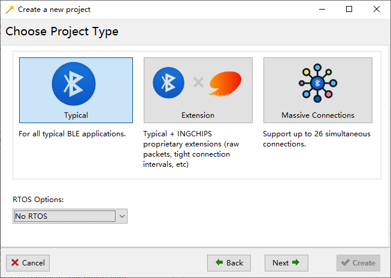

Highlights:
- 不包含 FreeRTOS 的 NoOS 软件包
- AoA 寻向 demo
1. 软件包
-
[新增] 针对 ING9188xx/ING9187xx 系列不包含 FreeRTOS 的 NoOS 软件包 (7.0.0)
NoOS 软件包不包含 FreeRTOS，开发者可以选择其它的 RTOS，与 app 一起编译。 我们针对蓝牙协议栈所需要的 RTOS 功能定义了通过 OS 接口，开发者只需要基于所选用的 RTOS 实现这个接口即可。 SDK 里提供了基于 FreeRTOS 和 RT-Thread 的两个示例作为参考。
可以考虑使用 NoOS 软件包的几种场景：
- 需要使用更多的 FreeRTOS 功能/API
- 现有系统使用了其它的 RTOS
- ……
具体使用方法详见文末介绍。
-
[更新]
ll_hint_on_ce_len现在可用于中心角色 (7.0.0) -
[更新] 扩展广播每个广播事件进行跳频 (7.0.0)
-
[更新] 优化
mass_conn软件包的吞吐率 (7.0.0)
2. 库/源代码
-
[新增] 包含 FreeRTOS & RT-Thread 源代码 (7.0.0)
-
[新增] 通过 OS 接口在 FreeRTOS & RT-Thread 上的实现 (7.0.0)
-
[更新] 微调
power_ctrl.lib(7.0.0) -
[更新] 杂项更新:
compiler.h,ingsoc.h(7.0.0)
3. 示例
-
[新增]
Peripheral Console FreeRTOS/RT-Thread: 演示了外置 RTOS + NoOS bundles 的使用方法 (7.0.0) -
[更新]
Central CTE: 发现并配置 CTE 服务 (7.0.0)
4. 文档
- [新增] Application Note: Direction Finding Solution (7.0.0)
5. 工具
- [新增] 实时 AoA 寻向 demo (7.0.0)
- [更新] Wizard: 支持 NoOS 软件包 (7.0.1)
- [更新] 使用 Keil v5.36 重新编译 Coremark 分数提升到 2.13/MHz (7.0.0)
6. 使用 NoOS 软件包
6.1 新项目
-
使用项目向导创建新项目时，RTOS 选项选择“No RTOS”:

-
将 RTOS 源代码添加到项目，并配置编译选项
以 RT-Thread Nano 为例，将 RT-Thread 的
rtconfig.h复制一份到项目目录下，修改以下配置：#define RT_TICK_PER_SECOND 1024 -
实现通用 OS 接口
通用 OS 接口的定义在
port_gen_os_driver.h里，一共包含大约 20 个 API。platform.bin 从app_main的返回值获取接口实现：const gen_os_driver_t gen_os_driver = { .timer_create = ... }; uintptr_t app_main() { ... return (uintptr_t)&gen_os_driver; } -
实现 tickless 低功耗
如果 app 需要使用省电功能，则需要实现 tickless 低功耗。—— 这是使用 NoOS 软件包开发 app 一个难点。
tickless 低功耗在 RTOS 空闲任务（task, thread 等）里实现，总体逻辑如下：
void idle_task(void) { for (;;) { timeout_tick = 多少个tick无事可做(); if (platform_pre_suppress_ticks_and_sleep_processing(timeout_tick) > 一定时间) { 调度器停止(); platform_pre_sleep_processing(); platform_post_sleep_processing(); tick_cnt = 睡了多少tick(); 补偿tick计数器(); 重新开始产生tick中断(); 调度器继续(); } platform_os_idle_resumed_hook(); } } -
其它区别
使用 NoOS 软件包与使用内置 FreeRTOS 软件包的 app 的其它区别：
- ISR 使用的栈空间由 app 中断向量表给出，platform.bin 不再提供
platform_install_isr_stack - platform.bin 不再提供
platform_get_heap_status，开发者可自行实现 PLATFORM_CFG_RTOS_ENH_TICK功能需要开发者在实现 tickless 低功耗时考虑
- ISR 使用的栈空间由 app 中断向量表给出，platform.bin 不再提供
6.2 移植已有项目
建议先新建一个 NoOS 项目，然后将已有代码添加到新项目。